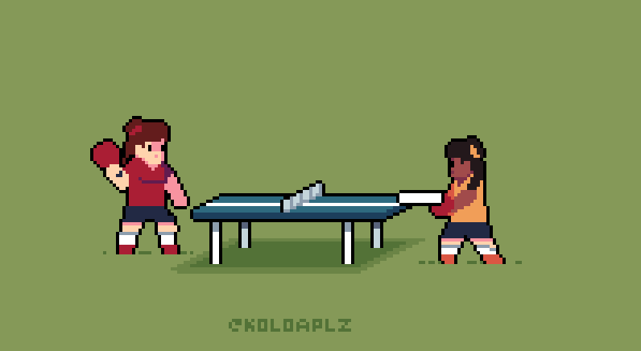

AI Ping Pong Game
Instructions

Play Game
Restart Game
Instructions
×
First, keep your laptop screen straight.
Move yourself approximately 3-4 feet away from the laptop.
To play the game, scroll down.
Move your right wrist in ascending and descending order a multicolored dot should appear on your right wrist.
Now Press the play button and again, move yourself 3-4 feet away from the laptop.
The red paddle is your paddle and it will move according to your right wrist.